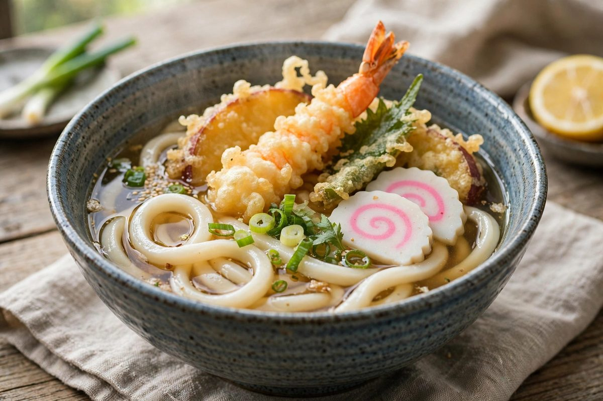

Udon Noodles — Thick, Chewy and Comforting
How to cook udon noodles properly, make a simple broth, and build classic bowls like kitsune and tempura udon.
What udon is
Udon are thick wheat noodles with a soft, chewy bite, and they are one of Japan's most comforting foods. Unlike ramen, which is thin and springy, udon is wide and tender, and it is served in hot broth, in cold dipping sauce, or stir-fried. Fresh and frozen udon cook in minutes and have a much better texture than dried, though dried udon is still good and keeps for months in the cupboard. Udon is a forgiving noodle: it is hard to overcook badly, it suits simple broths, and it is a good first Japanese noodle dish to learn at home.
Cooking the noodles
Cook udon in a large pot of unsalted water, following the packet time: fresh or frozen udon usually needs two to three minutes, dried needs eight to ten. Stir gently at the start so the noodles do not stick together. Drain them well, and if you are serving them cold, rinse under cold water to stop the cooking and firm the texture. For hot soup, add the drained noodles straight to the bowl so they stay hot. Do not cook udon in the broth itself, because the starch clouds the soup. A separate pot of water is a small extra step that makes a visible difference.
A simple udon broth
The classic broth is dashi with soy sauce and mirin. For four bowls, use about one litre of dashi, three tablespoons of soy sauce, two tablespoons of mirin, and a pinch of salt. Warm it gently and taste it: it should be savoury and lightly sweet, not salty. In the Kansai region the broth is lighter and sweeter; in Kanto it is darker and saltier. Either style is correct, so adjust to your taste. A little grated ginger or a splash of sesame oil at the end adds warmth. Keep the broth simmering, not boiling hard, while the noodles cook.
Kitsune and tempura udon
Kitsune udon is topped with aburaage, thin fried tofu pouches simmered in a sweet soy sauce until they soak up flavour. It is the most popular udon topping in Japan and takes ten minutes to prepare: simmer the pouches in dashi, soy sauce, mirin, and sugar, then lay them over the noodles. Tempura udon adds a piece of crisp prawn or vegetable tempura on top, which softens slightly in the broth. Both versions are finished with chopped spring onion. These two toppings alone give you a small menu of udon bowls to rotate through the week.
Cold udon and stir-fried udon
In summer, udon is served cold with a chilled dipping sauce called mentsuyu, grated ginger, and spring onion. The noodles are rinsed cold, drained well, and dipped rather than soaked, which keeps their chew. Yaki udon is the stir-fried version: noodles tossed in a hot pan with vegetables, meat, and a soy-based sauce. It is a quick weeknight dinner and a good way to use leftover vegetables. Both styles show how versatile udon is: the same noodle works hot, cold, and fried, with almost any topping.
Serving and eating
Serve udon in deep bowls with plenty of broth, and eat it while it is hot. Slurping is normal and helps cool the noodles. Provide chopsticks and a spoon for the broth. If people eat at different times, keep the noodles and broth separate and combine them at serving time, so the noodles do not go soft. Leftover broth keeps in the fridge for two days and can be reused for soup or simmered dishes. Udon is simple food, and its simplicity is the point: good noodles, good broth, and one or two toppings are all it needs.
Frequently Asked Questions
Fresh or dried udon — which is better?
Fresh or frozen udon has a softer, chewier texture and cooks in two to three minutes, so it is the better choice when you can find it. Dried udon is still good, keeps for months, and works well in soup.
What is mentsuyu?
Mentsuyu is a concentrated dipping and soup sauce made from dashi, soy sauce, and mirin. Diluted with water it becomes noodle broth; used straight or lightly diluted, it is a dipping sauce for cold noodles.
Can I make udon vegetarian?
Yes. Use a kombu and shiitake dashi instead of bonito dashi, and top with tofu, mushrooms, and vegetables. Kitsune udon with aburaage is naturally vegetarian.